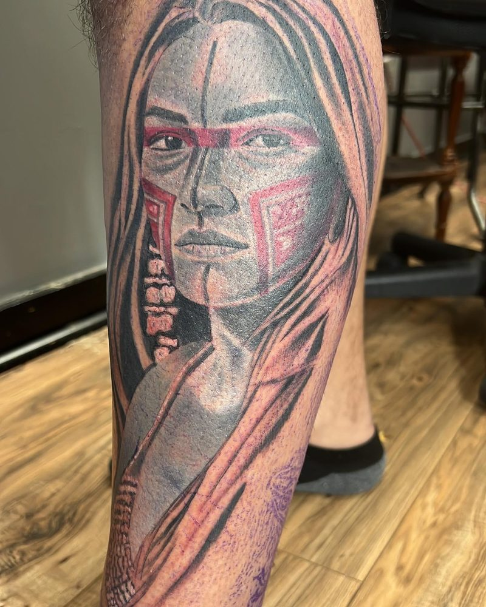
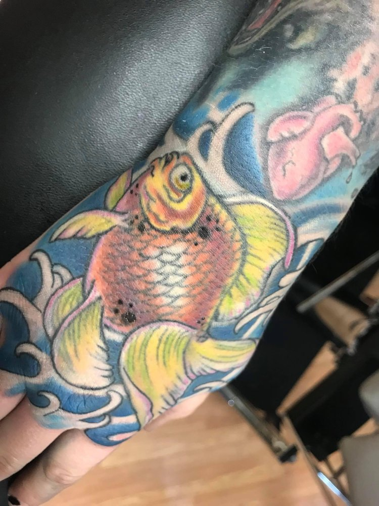
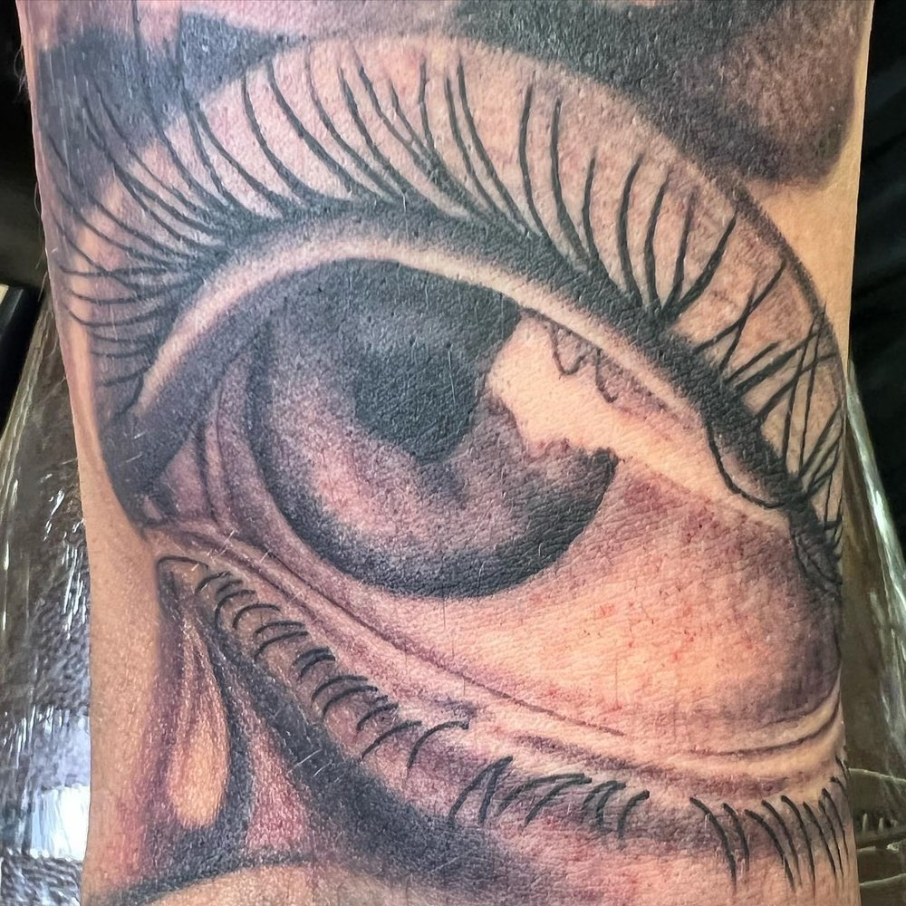
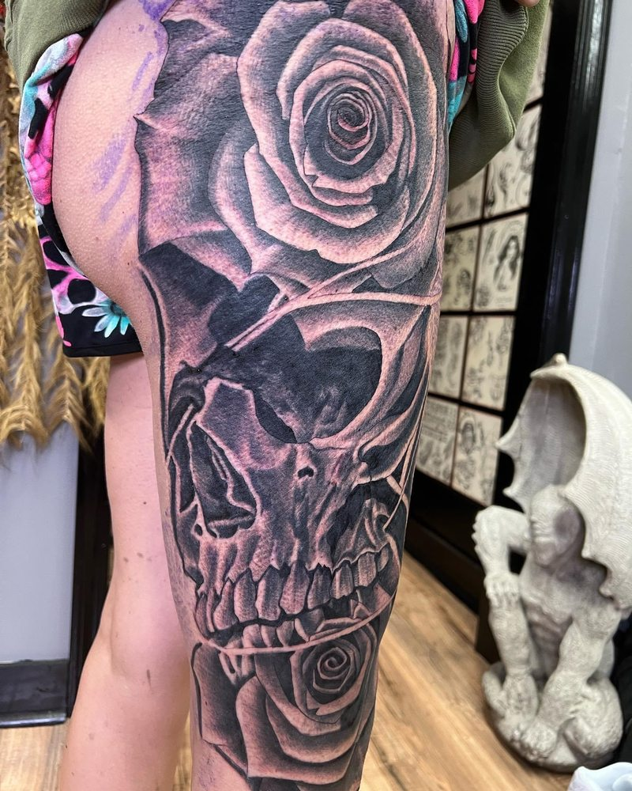
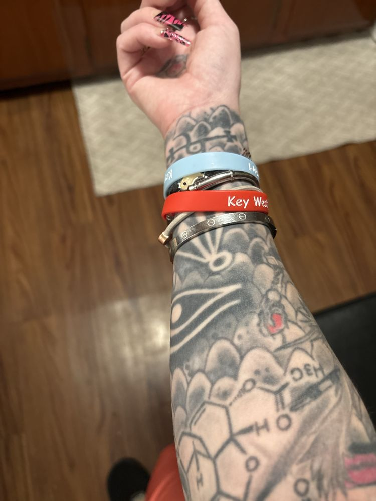

Meet Joe.
The Permanent Collection.
Layers of Ink.
Tattoo Joe runs Physical Graffiti on Fairfield Ave: custom work, cover-ups, repair, traditional Americana, Japanese and freehand pieces, plus professional body piercing.



Selected work
Full portfolio →

Custom tattoos
Original designs by appointment. Deposit secures your date.
Cover-ups & repair
Old work reimagined into something you’ll want to show.
Walk-ins
Welcome when the schedule allows.
Body piercing
Professional piercing in a clean, sterilized studio.
“Joe is the most talented artist I’ve encountered… His work is meticulous, vibrant, and always consistent. He is extremely clean and always sterilizes his space before and after.”
Client review, Oct 2023
“I went to Joe for my first ever tattoo at a later age than most. Joe was extremely professional, very confident and reassuring… I would recommend him to anyone.”
Client review, Apr 2024